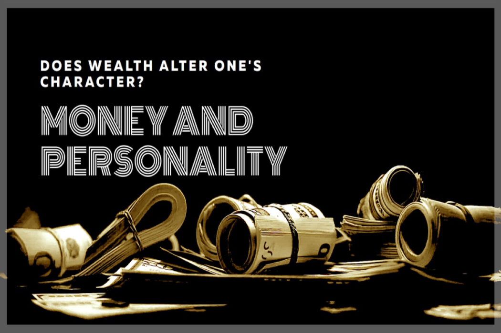
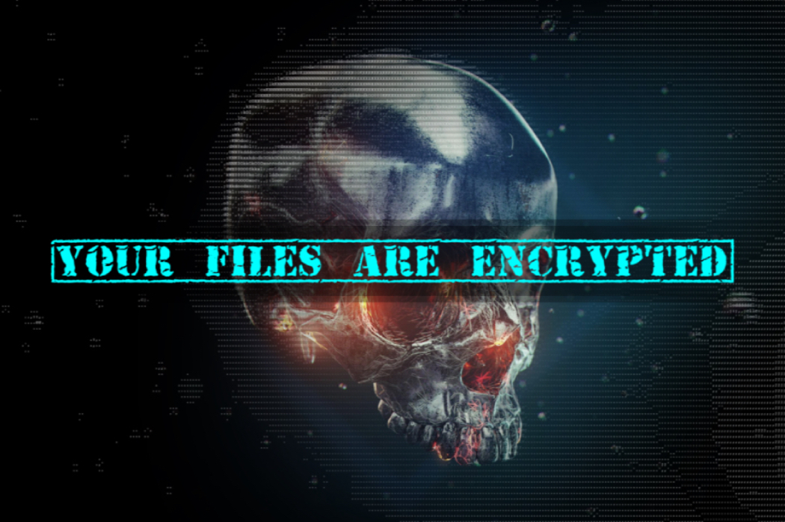

This page is still under construction.
In the meantime, you can still peruse what is currently available while additional content is slowly populated here.
In the meantime, you can still peruse what is currently available while additional content is slowly populated here.
A limited look at some of the artwork I have created over the years for personal enjoyment or for use in an official NSS Capture-The-Flag event.
Technical WritingA limited look at some of the music and video projects I have created over the years, including a sneak peek at some unreleased content.
Technical Writing
Various infosec projects, including my Gibson cyber range, forensic work, and findings related to responsible disclosure or bug bounty programs.
Op-edA comprehensive index of infosec articles, homelab guides, and political potty-mouthing written by me without the help of artificial intelligence.
Op-edA condensed look at some of the infosec instruction and coursework that I provide to students using various methods, platforms and technologies.
Technical WritingA behind-the-scenes look at some of the cryptographic methods and algorithm design patterns I created for use in NSS training materials.
Technical Writing, Op-ed
All of my lessons and coursework is availble on a Discord server where I provide training and mentoring a no cost to NSS students and hopefuls.
Technical Writing, Op-edMy self-represented (pro-se) journey all the way to the Supreme Court of Texas in a fight to save the life of my Belgian Malinois named Major.
Technical WritingMy self-represented (pro-se) journey all the way to the Supreme Court of Texas in a fight to save the life of my Belgian Malinois named Major.
Technical Writing, Op-edMy self-represented (pro-se) journey all the way to the Supreme Court of Texas in a fight to save the life of my Belgian Malinois named Major.
Technical Writing, Op-edMy self-represented (pro-se) journey all the way to the Supreme Court of Texas in a fight to save the life of my Belgian Malinois named Major.
Op-edMy self-represented (pro-se) journey all the way to the Supreme Court of Texas in a fight to save the life of my Belgian Malinois named Major.
Op-edMy self-represented (pro-se) journey all the way to the Supreme Court of Texas in a fight to save the life of my Belgian Malinois named Major.
Op-edMy self-represented (pro-se) journey all the way to the Supreme Court of Texas in a fight to save the life of my Belgian Malinois named Major.
Op-edMy self-represented (pro-se) journey all the way to the Supreme Court of Texas in a fight to save the life of my Belgian Malinois named Major.
Technical Writing, Op-edYou can visit the answers section of my Quora profile, many of which became articles on LinkedIn.
Technical writing is a specialized form of communication used by industrial and scientific organizations to clearly and accurately convey complex information to customers, employees, assembly workers, engineers, scientists and other users who may reference this form of content to complete a task or research a subject. Technical writing is a labor-intensive form of writing that demands accurate research of a subject and the conversion of collected information into a written format, style, and reading level the end-user will easily understand or connect with.
An op-ed (short for "opposite the editorial page"), a type of opinion journalism, is written prose that expresses a strong, focused opinion on an issue of relevance to the target audience and is commonly found in newspapers, magazines, and online publications. Op-eds offer independent voices a foundation to influence public discourse, and are written to persuade, inform, or incite public debate, with rhetoric playing a vital role in achieving these goals. Online publications and blogs have become popular, and social media plays a significant role in disseminating and engaging with op-ed content. While they have always had a significant impact on public opinion, the digital age has allowed op-eds to influence the public more broadly and almost instantaneously.
By far, the most common form of technical writing is procedural technical writing. Procedures are simply instructions broken down into easily understood, individual steps. To be effective, the expert and "layman" reader must be equally capable of understanding the same procedures. This is why accuracy, standardization, and simplicity are so critical in producing this form of writing.
The second most common form of technical writing is often referred to as scientific technical writing. This form of technical writing follows "white paper" writing standards and is used to market a specialized product/service or opinion/discovery to select readers. Organizations normally use scientific technical writing to publish white papers as industry journal articles or academic papers. Scientific technical writing is written to appeal to readers familiar with a technical topic. Unlike procedural technical writing, these documents often include unique industry terms, data, and a clear bias supporting the author or the authoring organization's findings/position. This secondary form of technical writing must show a deep knowledge of a subject and the field of work with the sole purpose of persuading readers to agree with a paper's conclusion. Technical writers generally author, or ghost write white papers for an organization or industry expert, but are rarely credited in the published version.
While technical writing has only been recognized as a profession since World War II, its roots can be traced to ancient Egypt, where visual communication was regularly used to explain procedures. In ancient Greek and Roman times, technical writing by the works of writers like Aristotle and Democratus are cited as some of the earliest forms of written technical writing. The earliest examples of what would be considered modern procedural technical writing date back to the early alchemists.
Op-eds are written to persuade, inform, or incite public debate, with rhetoric playing a vital role in achieving these goals. Contributors often establish their credentials early to build credibility, which is an appeal to ethos. An emotional appeal, or pathos, is another common tactic where authors evoke sympathy, anger, or hope in order to drive people to action. Logical appeals, or logos, are achieved through well-reasoned arguments and evidence by using statistics, historical examples, and real-world scenarios structured in a way to connect with readers and make their case compelling and hard to ignore.